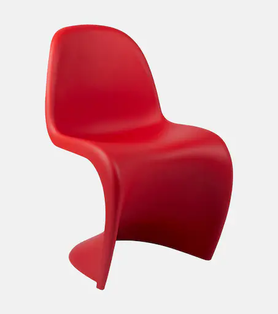
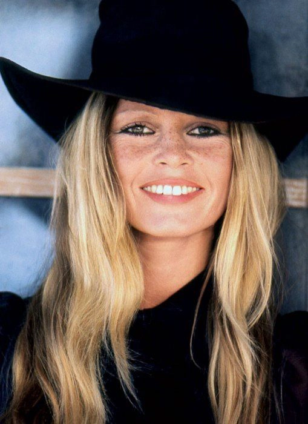
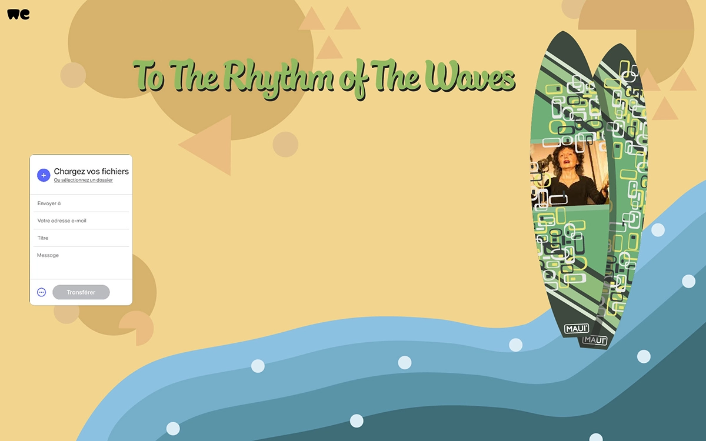

Le SwissDesignFair a été créé en 1995 pour mettre en valeur et promouvoir le design et l’architecture d’intérieur suisses.
La créativité formelle et ingénieurale des produits, la qualité des matériaux et la finesse des réalisations en font un Salon à la renommée mondiale. Durant six jours, le SwissDesignFair accueille des grandes marques, des industriels, des éditeurs de meubles et des créateurs indépendants.
- 6 jours
- 150 exposants
- 280 marques
- 1 portrait - rétrospective
- 1 exposition thématique
Produits
voir

Portrait
rétrospective

Brigitte Bardot est une célébrité légendaire dans le monde entier, et pour cause :
- Cinéma : Elle a connu le succès au cinémanfrançais avec des rôles mémorables.
- Style : Elle est restée dans le mémoire avec sa coiffure iconique et son style distinctif.
- Activisme : Elle est passionnée par la protection des animaux, elle a créé sa fondation pour soutenir ces efforts.
- influence culturelle : Elle est devenue un sym bole, inspirant des générations d’artistes.
- Héritage durable : Elle est toujours, même des décennies après avoir pris sa retraite, une personnalité célèbre.
Exposition
To the rhythm of the waves, le nouveau produit des entreprises MAUI, est une série de stand-up paddle, elle a été désignée expressément pour le salon selon notre thème, les années 1950 à 1979. Chaque stand-up paddle représente une décennie différente, et est accompagné d’une personnalité marquante de ladite décennie. Une première série de trois stand-up paddle a déjà été réalisée et sera présentée lors du salon, cependant l’entreprise a décidé qu’elles ne seront mises en vente qu’une fois le salon fini.